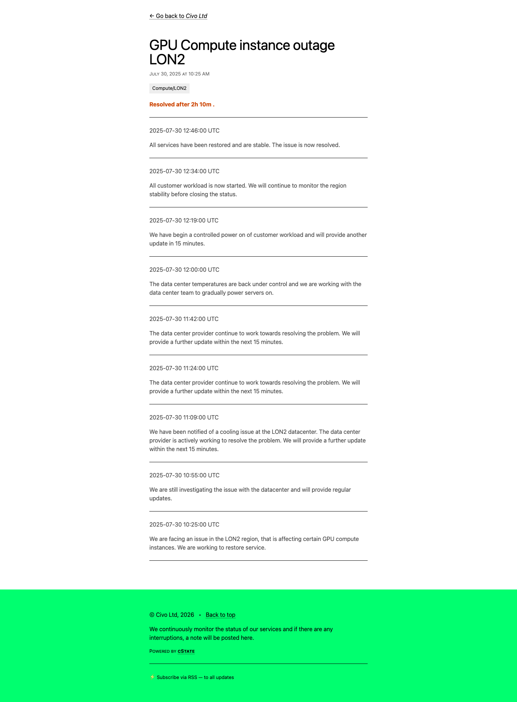
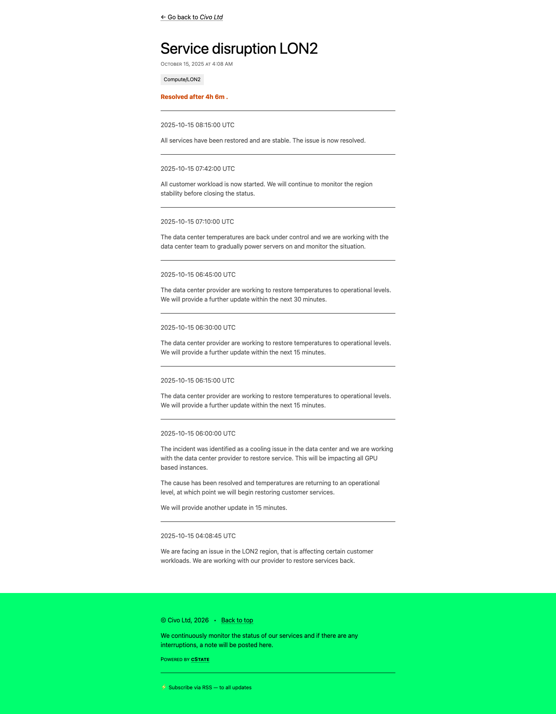
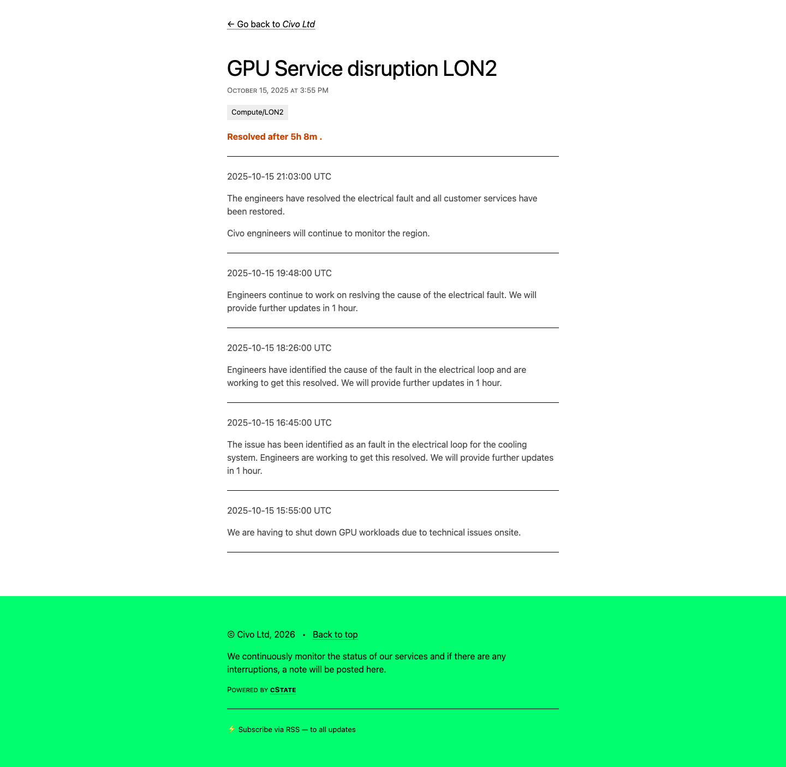
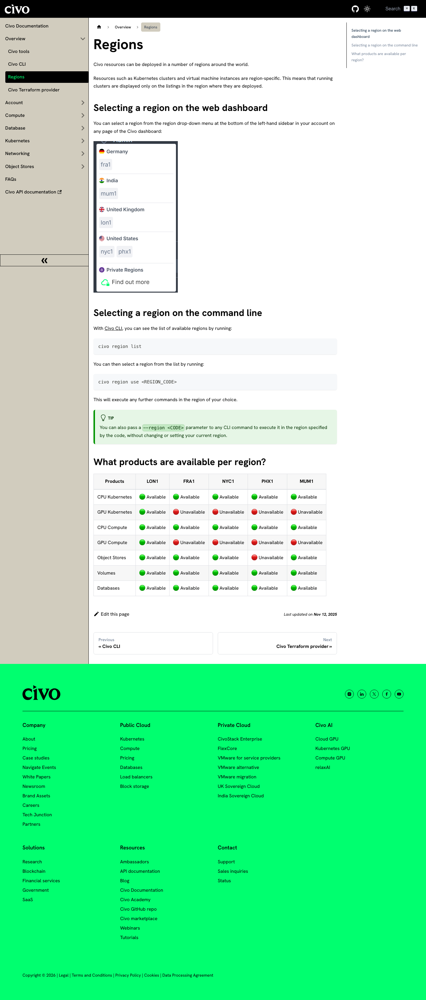

Lansing's Deep Green Due Diligence Gap
LANSING, Mich. — Deep Green Technologies withdrew its $120 million data center proposal on April 6, hours before a City Council vote it was expected to lose. The prevailing narrative is that politics killed the project: WLNS reported the land sale was not likely to garner the six votes needed to pass.
But the project moved through five months of public hearings, two Planning Commission votes, a BWL Board presentation, and a 604-page Council packet without any public discussion of whether this company's track record supports what it is promising.
The approval chain
The Deep Green proposal touched every layer of Lansing's governance structure.
BWL General Manager Dick Peffley negotiated with Deep Green for approximately five months before the November 5, 2025 public announcement. He signed a non-disclosure agreement without documented BWL Board authorization. He presented the $100-125M steam-to-hot-water conversion to the BWL Board on September 9, 2025 as a standalone project, with no mention of Deep Green, data centers, or waste heat. Peffley had the longest relationship with Deep Green of anyone in the approval chain.
Mayor Andy Schor's office processed the rezoning application. His Director of Economic Development and Planning, Rawley Van Fossen, oversaw the department that evaluated the proposal.
The Lansing Economic Area Partnership (LEAP) brought the deal to the city. LEAP's function is business attraction, and its incentive structure rewards closing deals, not scrutinizing the companies behind them.
The Planning Commission voted twice on the rezoning. The December 2 vote failed 3-4. After Deep Green resubmitted, two commissioners (Monte Jackson and John Ruge) flipped their votes, and the March 3 vote passed 5-2. Neither commissioner publicly explained the reversal. The Commission evaluated land use, not the applicant's technical capability or operational history.
City Council was the last check. Members received a 604-page packet for the April 6 vote, a buy-sell agreement with three blank exhibits, and BWL contracts locked behind an NDA. Council Member Deyanira Nevarez Martinez pressed Deep Green CTO Matt Craggs about the company's experience during the March 23 hearing (packet and video), but the hearing record contains no mention of the operational problems documented below.
Here is some of what any of them could have found.
The flagship facility's cooling failures
DG03 in Swindon, UK is Deep Green's largest operational facility at 1.1 MW. In November 2024, UK cloud provider Civo launched its second cloud region (LON2) there. Deep Green CEO Mark Bjornsgaard called it proof that "innovation and sustainability can go hand in hand."
Between July and October 2025, that facility experienced three cooling-related outages. All are documented on Civo's public status page, which is free and requires no login.



Two cooling failures on a single day, the second caused by an electrical fault in the cooling system's power circuit. Combined October 15 downtime: over nine hours. Total across three incidents: approximately 11 hours 24 minutes.
DG03 is housed inside a facility Deep Green calls "Carbon-Z." The Civo incident reports attribute the failures to "the data center provider" without specifying whether the faults occurred in Deep Green's immersion cooling tanks or in the building's conventional cooling and electrical infrastructure. What is clear: the facility Deep Green presented to Lansing as evidence of a working model experienced three cooling-related shutdowns in five months.
LON2 removed from Civo's public documentation
Civo's official regions documentation, as of April 8, 2026, lists five active cloud regions.

LON1, FRA1, NYC1, PHX1, MUM1, and no LON2. Civo's status monitoring page does not track it either.
This does not prove LON2 is shut down. Existing customers may still have access, and cloud providers sometimes move regions to invitation-only status without public explanation. Civo has not issued a statement about the change. But a cloud region that disappears from public documentation 17 months after a joint launch press release, following repeated cooling failures at the host facility, is a question that never came up in Lansing.
The website edit Deep Green made after the failures
Internet Archive snapshots of Deep Green's DG03 Swindon page show a change in the facility's description that tracks the cooling failures.
"DG03 Swindon is the site of our art-of-the-possible heat recapture and reuse laboratory, and hyper-efficient high performance compute cloud."
October 10, 2025, five days before the double cooling failure: same language.
"DG03 Swindon is the site of our hyper-efficient high performance compute cloud."
"Art-of-the-possible heat recapture and reuse laboratory" was gone. The live page today remains unchanged from January.
The description text is embedded in the page's HTML source code (the site uses the Framer JavaScript framework). Anyone can verify the change by fetching the archived HTML and searching for the phrase "art-of-the-possible." It appears in the June and October snapshots. It does not appear in January or today.
Deep Green removed its heat reuse claim from its flagship facility's page between October 2025 and January 2026, while simultaneously telling Lansing that heat reuse was the core of its value proposition.
No heat host was ever named for the flagship
Every other Deep Green facility names a specific partner receiving its waste heat:
| Facility | Heat Host |
|---|---|
| Exmouth | Exmouth Leisure Centre |
| DG01 Manchester | move Urmston Leisure Centre |
| DG02 York | Monks Cross Leisure Park |
| DG05 Bradford | Bradford Energy Network / 1Energy |
| DG06 Lansing | BWL hot water system |
| DG03 Swindon | None ever named |
Swindon is the only facility in Deep Green's portfolio, operational or planned, that has never been publicly associated with a heat reuse partner. Even at its most optimistic, the page called it a "laboratory," not a working installation with a partner receiving free heat.
What a basic check would have shown
Deep Green has 1.53 megawatts of operational data center capacity worldwide. The Lansing project was 24 megawatts, 22 times larger than anything the company has operated.
| Facility | Location | Capacity | Status |
|---|---|---|---|
| Exmouth | Devon, UK | ~28 kW | Operational (described as a "trial") |
| DG01 | Manchester, UK | 400 kW | Operational |
| DG03 | Swindon, UK | 1.1 MW | Cooling failures documented |
| DG02 | York, UK | Unknown | Under construction |
| DG05 | Bradford, UK | 5 MW | Planning application filed |
| Lincoln | Lincoln, UK | 20 MW | Pre-planning |
| DG06 | Lansing, MI | 24 MW | Withdrawn |
In January 2024, Octopus Energy invested £200 million in Deep Green. The company's stated ambition, per Data Center Dynamics, is to deploy 300 MW of distributed capacity across Europe and the US. Twenty-six months after the investment, 1.53 MW of that target is operational.
The company's proof-of-concept is 12 servers that the Exmouth Journal described as a "trial." The CIBSE Journal (a building services trade publication) reported that the system warms the pool to its target temperature of 30°C 60% of the time, with the existing gas boiler covering the rest. Whether the 60% figure reflects periods when the servers aren't generating enough heat or periods when the pool is already warm enough, the only quantified performance figure for Deep Green's heat reuse technology shows it supplementing, not replacing, conventional heating.
BWL's proposed hot water system, described in the September 9, 2025 BWL Board presentation, serves dozens of downtown buildings on a centralized loop. No Deep Green facility has ever been paired with on-site fuel cells. The Lansing proposal included a 16 MW Bloom Energy solid oxide fuel cell plant generating high-temperature exhaust, a thermal management challenge with no precedent in Deep Green's portfolio or anyone else's.
The gap
| What Lansing was told | What public records show |
|---|---|
| Proven heat reuse technology | Largest facility called heat reuse a "laboratory," then deleted the claim |
| Reliable immersion cooling | Three cooling failures in five months at flagship facility, ~11 hours downtime |
| Operational UK data centers | Primary customer removed the Swindon region from its public documentation |
| Waste heat for BWL district heating | Proof-of-concept warms pool to target temperature 60% of the time |
| £200M from Octopus Energy | 1.53 MW operational of a stated 300 MW target, 26 months after investment |
| "First data center of its kind in the US" | 22 times larger than anything the company has ever operated |
A review of City Council, Planning Commission, and BWL Board of Commissioners meeting records from November 2025 through April 2026 found no presentation of this operational history.
Peffley had five months of direct contact with Deep Green, Schor's administration processed the application, LEAP recruited the company, the Planning Commission voted twice, and Council received a 604-page packet. The Civo status page is free and requires no login. The Wayback Machine is free. A search engine query for "Deep Green Swindon" returns the Civo partnership announcement on the first page of results.
Sources
Civo incident reports
- GPU Compute instance outage LON2, July 30, 2025
- Service disruption LON2, October 15, 2025 (AM)
- GPU Service disruption LON2, October 15, 2025 (PM)
Civo documentation
- Civo regions documentation (LON2 not listed, fetched April 8, 2026)
- Civo status page (LON2 not monitored, fetched April 8, 2026)
- Civo newsroom: LON2 launch with Deep Green (November 22, 2024; page no longer on Civo newsroom, archived via Tech.eu)
Wayback Machine (Internet Archive)
- DG03 page, June 12, 2025 ("art-of-the-possible heat recapture and reuse laboratory")
- DG03 page, October 10, 2025 (same language, 5 days before double failure)
- DG03 page, January 13, 2026 (heat reuse language deleted)
Deep Green website
- DG03 Swindon page (fetched April 8, 2026)
- DG01 Manchester page (fetched April 8, 2026)
Trade press
- Tech.eu: Civo partners with Deep Green (November 22, 2024)
- CIBSE Journal: Heat from mini data centres (60% heat availability, scaling challenges)
- DCD: Deep Green Bradford 5MW filing (July 31, 2025)
- BeBeez/DCD: Deep Green plots US expansion, 300 MW target (November 10, 2025)
UK and local sources
- East Devon Council: Exmouth pool heating announcement (March 14, 2023)
- Exmouth Journal: "trial" language (March 14, 2023)
- UK Companies House: Deep Green Technologies Ltd (#13601125)
- Octopus Energy: £200M investment announcement (January 2024)
Lansing records
- WKAR: Deep Green withdraws (April 6, 2026)
- WLNS: Deep Green withdraws rezoning request (April 6, 2026)
- CivicClerk: March 23, 2026 Council meeting
- WKAR: Planning Commission Dec 2 vote fails 3-4 (December 3, 2025)
- Michigan Advance: Planning Commission Mar 3 vote passes 5-2 (March 4, 2026)
- BWL Board meeting packets and minutes
- BWL/Deep Green joint press release (November 5, 2025)
- WKAR: Bloom Energy 16 MW fuel cell disclosure (January 16, 2026)